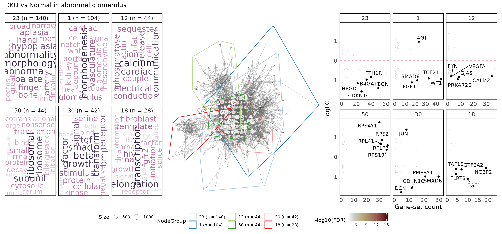

Analysing Nanostring’s GeoMX transcriptomics data using standR, limma and vissE
Ning Liu
Bioinformatics Division, Walter and Eliza Hall Institute of Medical Research, Parkville, VIC 3052, AustraliaDepartment of Medical Biology, University of Melbourne, Parkville, VIC 3010, Australialiu.n@wehi.edu.au
Chin Wee Tan
Bioinformatics Division, Walter and Eliza Hall Institute of Medical Research, Parkville, VIC 3052, AustraliaDepartment of Medical Biology, University of Melbourne, Parkville, VIC 3010, Australiacwtan@wehi.edu.au
Melissa J Davis
Bioinformatics Division, Walter and Eliza Hall Institute of Medical Research, Parkville, VIC 3052, AustraliaDepartment of Medical Biology, University of Melbourne, Parkville, VIC 3010, AustraliaDepartment of Biochemistry and Molecular Biology, Faculty of Medicine, Dentistry and Health Sciences, University of Melbourne, Parkville, VIC, 3010, Australiadavis.m@wehi.edu.au
Jul 2022
Source:vignettes/GeoMXAnalysisWorkflow.Rmd
GeoMXAnalysisWorkflow.RmdAbstract
Abstract
R version: R version 4.2.0 (2022-04-22)
Bioconductor version: 3.16
Background and introduction
Nanostring GeoMX data
Nanostring’s GeoMx DSP data comes from the GeoMx DSP workflow which
integrates standard pathology and molecular profiling to obtain robust
and reproducible spatial multiomics data. DSP data typically comes from
whole tissue sections, FFPE or fresh frozen samples. These can be imaged
and stained for RNA or protein using which specific tissue compartments
or cell types to be profiled based on the biology can be selected. These
selected regions or areas of interests will
have their count expression levels quantified using either the nCounter
Analysis System or an Illumina Sequencer.
GeoMx RNA assays allows quantitative and spatial measurements of transcripts (up to the whole transcriptome) from single sections of FFPE or fixed fresh frozen tissues. Typical gene panels utilised include the Cancer transcriptome Atlas (CTA, ~1800 genes) and Whole Transcriptome Atlas (WTA, ~ 18000 genes).
Count data are generated from the DSP pipeline and technical pre-processed using the GeoMx Data Analysis Suite (DSPDA). This includes the removal of low performing probes and calculation of a typical QC metrics called LOQ using the negative probes. Data normalization are typically conducted based on recommendations from Nanostring by the technologist/technicians with a suggested Q3 normalized data output.
Note: Q3-normalised data is not recommended for any bioinformatics workflow or pipeline. Rather, the technical probe corrected counts (probeQC, which accounts for any technical machine systematic errors during the DSP run) is recommended.

flowchart
Analysis of spatial GeoMX datasets
A typical bioinformatics analysis of a GeoMX DSP dataset often starts
with a count table (from sequencing reads of genes for each region of
interest (ROI)), and ends with either identifying differential expressed
genes or performing gene signature/gene-set scoring pathway/enrichment
analyses in various conditions or experimental designs. Nevertheless,
before performing any differential expression (DE) analysis or other
downstream analyses that are based on the gene counts, proper quality
control(QC) and normalisation of the data is essential and if not done
properly, will greatly impact the correctness and validity of the DE and
corresponding downstream analysis’ results. We therefore developed a
bioconductor package called standR
(Spatial transcriptomics
analyzes and decoding
in R) to assist the QC, normalisation and batch
correction of the GeoMX transcriptomics data.
There are three major advantages of using the standR
package to analyse the GeoMX DSP datasets:
The package uses the
SpatialExperimentinfrastructure to analyse the data, this infrastructure is a lineage of theSummarisedExperimentfamily, which is highly recommended in the bioconductor community. It is compatible and transferable with many other well developed packages in the RNA-seq analysis world, such asscater,scran,edgeRandlimma.The package features a comprehensive route for quality control, and provides various visualisation functions to help in the assessment of the various quality control metrics.
Batch effect is a common feature in transcriptomic dataset, especially in GeoMX DSP data due to the way the slides are typically utilised due to experimental constrains/designs. The package currently provides three batch correction methods that will remove the unwanted batch effect and provides statistics for assessing the correction process and outcomes.
In this workshop, we will firstly use standR to process
and analyse a published GeoMX WTA dataset using the recommended
workflow. This will demonstrate our recommended workflow for processing
and analysing GeoMX transcriptomics datasets. Secondly, we will perform
DE analysis of the processed data using the limma-voom
pipeline, followed by a gene-set enrichment analysis using
fry and subsequent visualisation of the higher order
results using the R package vissE.
Using standR for process and analyseg GeoMX transcriptomics data
Load data
The data we are using in this workshop is a published GeoMX whole transcriptome atlas (WTA) dataset of diabetic kidney disease (DKD) that was made available by Nanostring (url XXX, see if we can include a image of the typical dataset).
This dataset includes data on seven slides, which includes 4 DKD and 3 healthy slides. The ROI selection strategy employed is a regional based approach focused primarily on two distinct structures found in the kidney, namely: tubules or glomeruli.
Glomeruli ROIs were identified and curated by a pathologist
as either relatively healthy or diseased regardless of
the tissue type (DKD or healthy).
Tubule ROIs were segmented into distal (PanCK positive)
and proximal (PanCK negative) tubules. Distal and proximal
tubules are distinct in terms of their differing functions in the
kidney.
This GeoMX DSP data can be retrieved by querying the
ExperimentHub repository. The query below searches for all
objects in the hub associated with the search term “standR”.
library(ExperimentHub)
eh <- ExperimentHub()
query(eh, "standR")## ExperimentHub with 3 records
## # snapshotDate(): 2022-07-15
## # $dataprovider: Nanostring
## # $species: NA
## # $rdataclass: data.frame
## # additional mcols(): taxonomyid, genome, description,
## # coordinate_1_based, maintainer, rdatadateadded, preparerclass, tags,
## # rdatapath, sourceurl, sourcetype
## # retrieve records with, e.g., 'object[["EH7364"]]'
##
## title
## EH7364 | GeomxDKDdata_count
## EH7365 | GeomxDKDdata_sampleAnno
## EH7366 | GeomxDKDdata_featureAnnoThe three files that are associated with the DKD GeoMX data in the
standR package can then be retrieved by specifying their
IDs. The respective objects can then be retrieved using the accession
IDs (“EH7364” for counts,“EH7365” for sample annotation,“EH7366” for
gene annotations)
countFile <- eh[["EH7364"]]
sampleAnnoFile <- eh[["EH7365"]]
featureAnnoFile <- eh[["EH7366"]]We can have a first look at the format of the three files, which are the typical files made available by NanoString.
The countFile is a tab-delimited file, it contains the
count table (features by samples) we generally see in transcriptomics
analysis. By default as provided by the Nanostring, it is required to
have the gene name column with the column name of “TargetName”.
read.delim(countFile, nrows = 5)[,1:3]## TargetName disease3_scan...001...PanCK disease3_scan...001...neg
## 1 PADI2 15 35
## 2 CYP24A1 23 32
## 3 SUPT16H 35 66
## 4 ZMIZ2 51 81
## 5 SPAG9 48 65The sampleAnnoFile is a tab-delimited file, containing
all the annotation (metadata) for the samples. By default as provided by
the Nanostring, it is required to include the sample name column with
the column name of “SegmentDisplayName”.
read.delim(sampleAnnoFile, nrows = 5)[,1:5]## SlideName ScanName ROILabel SegmentLabel
## 1 disease3 disease3_scan 7 Geometric Segment
## 2 disease3 disease3_scan 8 Geometric Segment
## 3 disease3 disease3_scan 9 Geometric Segment
## 4 disease3 disease3_scan 10 Geometric Segment
## 5 disease3 disease3_scan 11 Geometric Segment
## SegmentDisplayName
## 1 disease3_scan | 007 | Geometric Segment
## 2 disease3_scan | 008 | Geometric Segment
## 3 disease3_scan | 009 | Geometric Segment
## 4 disease3_scan | 010 | Geometric Segment
## 5 disease3_scan | 011 | Geometric SegmentThe featureAnnoFile is a tab-delimited file, containing
all the annotation (metadata) of the genes in the dataset. By default as
provided by the Nanostring, it is required to include the gene name
column with the column name of “TargetName”.
read.delim(featureAnnoFile, nrows = 5)## RTS_ID TargetName ProbeID Negative
## 1 RTS0020877 A2M 35614 FALSE
## 2 RTS0020878 NAT2 35615 FALSE
## 3 RTS0020879 ACADM 35616 FALSE
## 4 RTS0020880 ACADS 35617 FALSE
## 5 RTS0020881 ACAT1 35618 FALSEAs described in the introduction, there are many advantages to use a mature infrastructure throughout the analysis, such as compatibility with other tools.
Therefore, the first step in the standR package workflow
is to construct a SpatialExperiment object that includes
all the information available in the data. Here we can use the function
readGeoMX to do so. For more information about the
SpatialExperiment infrastructure, see here.
Note 1: by default, the readGeoMx function will
look for the gene name column in both the countFile and
featureAnnoFile with the column name of “TargetName”, and
the sample name column in the sampleAnnoFile with the
column name of “SegmentDisplayName”, these column names are given by the
Nanostring in the default settings, if your data have been modified, you
can indicate the corresponding column names by specifying the parameter
“colnames.as.rownames” in the readGeoMx function when
loading the data.
Note 2: if you plan to use readGeoMx to
construct the SpatialExperiment object with your own data,
make sure that the files you use as inputs are tab-delimited
files.
Check the basic information about the dataset by entering the object name directly. We see that the data has measurements for approximately 18503 genes and 231 ROIs.
spe## class: SpatialExperiment
## dim: 18503 231
## metadata(1): NegProbes
## assays(2): counts logcounts
## rownames(18503): PADI2 CYP24A1 ... FAM166A AGTPBP1
## rowData names(3): RTS_ID ProbeID Negative
## colnames(231): disease3_scan | 001 | PanCK disease3_scan | 001 | neg
## ... disease1B_scan | 023 | Geometric Segment disease1B_scan | 024 |
## Geometric Segment
## colData names(25): SlideName ScanName ... RoiReportY sample_id
## reducedDimNames(0):
## mainExpName: NULL
## altExpNames(0):
## spatialCoords names(2) : ROICoordinateX ROICoordinateY
## imgData names(0):Both count-level data and logCPM measurements are stored in the
spatialExperiment object. Specifically, the raw count data
is stored in the counts assay slot, while the log-CPM
(count per million) of the data is calculated by default with the
readGeoMX function and stored in the logcounts
assay of the object.
assayNames(spe)## [1] "counts" "logcounts"We can have a look at the count table by using the assay
function and specify the table name.
assay(spe, "counts")[1:5,1:5]## disease3_scan | 001 | PanCK disease3_scan | 001 | neg
## PADI2 15 35
## CYP24A1 23 32
## SUPT16H 35 66
## ZMIZ2 51 81
## SPAG9 48 65
## disease3_scan | 002 | PanCK disease3_scan | 002 | neg
## PADI2 36 41
## CYP24A1 23 41
## SUPT16H 46 61
## ZMIZ2 87 113
## SPAG9 46 91
## disease3_scan | 003 | PanCK
## PADI2 9
## CYP24A1 3
## SUPT16H 20
## ZMIZ2 68
## SPAG9 25
assay(spe, "logcounts")[1:5,1:5]## disease3_scan | 001 | PanCK disease3_scan | 001 | neg
## PADI2 4.694722 5.097130
## CYP24A1 5.205348 4.988548
## SUPT16H 5.738537 5.903808
## ZMIZ2 6.236242 6.175525
## SPAG9 6.155076 5.883737
## disease3_scan | 002 | PanCK disease3_scan | 002 | neg
## PADI2 5.507768 5.054985
## CYP24A1 4.952999 5.054985
## SUPT16H 5.824568 5.551068
## ZMIZ2 6.679218 6.363792
## SPAG9 5.824568 6.073582
## disease3_scan | 003 | PanCK
## PADI2 4.573874
## CYP24A1 3.518078
## SUPT16H 5.538414
## ZMIZ2 7.183436
## SPAG9 5.827206Sample metadata is stored in the colData of the
object.
colData(spe)[1:5,1:5]## DataFrame with 5 rows and 5 columns
## SlideName ScanName ROILabel SegmentLabel
## <character> <character> <numeric> <character>
## disease3_scan | 001 | PanCK disease3 disease3_scan 1 PanCK
## disease3_scan | 001 | neg disease3 disease3_scan 1 neg
## disease3_scan | 002 | PanCK disease3 disease3_scan 2 PanCK
## disease3_scan | 002 | neg disease3 disease3_scan 2 neg
## disease3_scan | 003 | PanCK disease3 disease3_scan 3 PanCK
## Sample_ID
## <character>
## disease3_scan | 001 | PanCK DSP-1001250007864-D-..
## disease3_scan | 001 | neg DSP-1001250007864-D-..
## disease3_scan | 002 | PanCK DSP-1001250007864-D-..
## disease3_scan | 002 | neg DSP-1001250007864-D-..
## disease3_scan | 003 | PanCK DSP-1001250007864-D-..Gene metadata are stored in the rowData of the
object.
rowData(spe)[1:5,]## DataFrame with 5 rows and 3 columns
## RTS_ID ProbeID Negative
## <character> <numeric> <logical>
## PADI2 RTS0051249 34691 FALSE
## CYP24A1 RTS0021490 36149 FALSE
## SUPT16H RTS0030451 44219 FALSE
## ZMIZ2 RTS0034986 48277 FALSE
## SPAG9 RTS0024185 38596 FALSEThe readGeoMX function has other parameters such as
hasNegProbe and NegProbeName that are opt to
deal with negative probes in the data. Then breifly talking about
negprobes in both WTA and CTA. By default, the readGeoMx
function will remove the negative probe, the one with name
“NegProbe-WTX”, in the count table and put it in the metadata of the
object. User can turn this off by specifying
hasNegProbe = FALSE in the function, just make sure no
duplicate gene names in the “TargetName” column.
metadata(spe)$NegProbes[,1:5]## disease3_scan | 001 | PanCK disease3_scan | 001 | neg
## NegProbe-WTX 18.08935 34.26331
## disease3_scan | 002 | PanCK disease3_scan | 002 | neg
## NegProbe-WTX 21.55552 40.01078
## disease3_scan | 003 | PanCK
## NegProbe-WTX 8.992909Import from DGEList object
Alternatively, standR provides a function to generate a
spatial experiment object from a DGEList object, which would be useful
for users who used edgeR package and have existing analyses
and implementations using DGEList objects to port across to the standR
workflow.
dge <- edgeR::SE2DGEList(spe)
spe2 <- readGeoMxFromDGE(dge)
spe2## class: SpatialExperiment
## dim: 18503 231
## metadata(0):
## assays(2): counts logcounts
## rownames(18503): PADI2 CYP24A1 ... FAM166A AGTPBP1
## rowData names(3): RTS_ID ProbeID Negative
## colnames(231): disease3_scan | 001 | PanCK disease3_scan | 001 | neg
## ... disease1B_scan | 023 | Geometric Segment disease1B_scan | 024 |
## Geometric Segment
## colData names(28): group lib.size ... RoiReportY sample_id
## reducedDimNames(0):
## mainExpName: NULL
## altExpNames(0):
## spatialCoords names(0) :
## imgData names(0):Quality control
The recommended quality control (QC) checks for the GeoMX transcriptome data consist of three major steps:
Inspection of the sample metadata: sample metadata can be view in
tabular-like format using thecolDatafunction, however here we aim to visualise the relations across the various sample information, such as which slide did the ROIs came from, which are the control groups and treatment groups, what are the pre-defined tissue types etc. By doing this, we will have an overview of how
the experiment was designed, the potential questions of interest, are they clear batch effects to look out for, and the comparisons of interest that can be established.Gene level QC: At the gene level, by default we aim at removing genes that are not expressed in more than 90% of the ROIs, and identifying any ROIs with very few genes being expressed.
This is similar to the process used inedgeR::filterByExpr, as genes with consistently low counts are unlikely be identified as significant genes. By keeping only the genes with sufficiently large counts in the analysis, we can increase the statistical power while reducing multiple testing burden.ROI level QC: At the ROI level, we aim to identify the low-quality ROIs that have small library size (i.e. total feature count) and low cell count. these low-quality ROIs, if not removed would show up as isolated clusters in the dimension reduction plots (PCA/UMAPs) and thereby affect the comparisons conducted during DE analyses.
Sample level QC
To visualise sample metadata, we can use the
plotSampleInfo function. In this dataset, the following key
features are of interest for which we would like to look at: slides
(“SlideName”), diseases status (“disease_status”), tissue regions
(“region”), and the
different cancer subtypes (“pathology”). These can be queries by listing
them in the function.
plotSampleInfo(spe, column2plot = c("SlideName","disease_status","region","SegmentLabel","pathology"))
Based on the known sample information, we know that all the glomerulus ROIs are classified as either abnormal or healthy, and tubule are classified as PanCK negative(“neg”) or positive (“PanCK”).
We therefore merge the region and segment/pathology related
annotations to avoid collinearity, which can cause problems when dealing
with batch correction. Specifically:
For glomerulus, “region” will concatenate with
“pathology”.
For tubule, “region” will concatenate with “segmentLabel”.
colData(spe)$regions <- paste0(colData(spe)$region,"_",colData(spe)$SegmentLabel) %>%
gsub("_Geometric Segment","",.) %>%
paste0("_",colData(spe)$pathology) %>%
gsub("_NA","",.)
colData(spe)$regions %>% table()## .
## glomerulus_abnormal glomerulus_healthy tubule_neg tubule_PanCK
## 77 72 41 41Re-plot the amended sample annotation to check that the changes have
been made.
It is now clearer and more straightforward in terms of the comparisons
we can establish and work with.
plotSampleInfo(spe, column2plot = c("SlideName","disease_status","regions"))
Gene level QC
Now we check on the gene level data. Using the
addPerROIQC function, we can add
key statistics to the colData of the object. For the
purpose of this exercise,
we will set the argument rm_genes to TRUE, and keeping the
default settings ofmin_count = 5 and sample_fraction = 0.9. We
first calculate the expression
threshold using the logCPM data (to account for library size
variations), we then
filter out the genes with low-expression values that’s below the set
threshold in
more than 90% of the ROIs.
spe <- addPerROIQC(spe, rm_genes = TRUE)Looking at the object again, we can see that 121 genes were removed.
The count matrix of the genes that were removed will be stored in the
metadata
of the object with prefix genes_rm, alongside the calculated
expression
threshold (lcpm_threshold).
dim(spe)## [1] 18382 231
metadata(spe) |> names()## [1] "NegProbes" "lcpm_threshold" "genes_rm_rawCount"
## [4] "genes_rm_logCPM"Using the plotGeneQC function, we can then assess the
logCPM expressions of the
genes that were removed across the samples. The function also plots the
histogram
/distribution of the proportion of non-expressed genes in all the ROIs
(as a
percentage). By default, the top 9 genes are plotted here (ordered by
the mean expression). Users can customise the number of genes plotted
using the parameter top_n.
Moreover, users can order the samples (using parameter
ordannots) or color/shape
the dots by specific annotation to better compare and assess for
specific biological or experimental factors which are influencing how
these genes were expressed across the samples (e.g. gene may be higly
expression in particular tissue types or under particular treatment
conditions. This genes are to be access or curated by domain experts to
ascertain or determine if any of these genes are of
biological/experimental significance. This provides a potential warning
to whether the experiments have worked as per intended.
plotGeneQC(spe, ordannots = "regions", col = regions, point_size = 2)
ROI level QC
After clecking the genes, we can now look at the ROI level data.
Using the plotROIQC function, we can visualise QC
statistics at the ROI level. By default, the library size and cell count
(AOINucleiCount) will be computed.
In the ROI level QC, we first aim to identify (if any) ROI(s) that have relatively low library size and low cell count because they are considered as low quality samples due to insufficient sequencing depth or the lack of RNA in the selected region. Frequency histograms are also provided for both library size and nuclei count to assist with assessing any abnormal distributions of samples in the data.
In this case, we assess the distribution plot for library size against the nuclei count. Looking at the scatter plot, we expect the library sizes to be mostly positively correlated with the cell count (i.e. nuclei count). It is not unexpected for there to be some ROIs having relatively low library size and having a reasonable number of cells (nuclei count). In this dataset, we see this library size vs cell count relationship is relatively smooth with no aberrations observed (e.g. spikes at the lower ranges)
To remove/filter low quality samples, we define a filtering threshold near the lower end of the library size range, in this case at 50,000. By stratifying (color) the points based on their slide names, we not that the ROIs below the threshold are all from slide disease1B (pale orange). This might suggest potential of some technical errors associated with slide disease1B.
plotROIQC(spe, y_threshold = 50000, color = SlideName)
In this experiment, based on the above plot, the library size
threshold of 50,000 looks to be a reasonable cutoff. As such we subset
the spatial experiment object based
on the library size using this threshold in colData.
qc <- colData(spe)$lib_size > 50000
spe <- spe[, qc]Note: The same workflow and logic can also be applied to the nuclei count. We will also check the gene detection rate to assess the quality of the dataset.
The function plotROIQC is looking at nuclei count and
library size of each ROI by default, user can change the x or y axis to
any other statics they want to QC by specifying the parameter
x_axis or y_axis. For example, the statistics
limit of quantification (LOQ) is summarised by the Nanostring process
pipeline and it’s provided in most/all of the GeoMX DSP dataset. This
metrics is calculated by on the distribution of the negative probes, and
it’s suggested by Nanostring that LOQ can be useful when there are large
segments (i.e. big ROI or high cell count samples), and a minimum LOQ of
2 is recommended.
plotROIQC(spe, y_axis = "LOQ", y_lab = "LOQ", x_axis = "lib_size", x_lab = "Library size", y_threshold = 2, col = SlideName)
Relative log expression distribution
After filtering, we will use function plotRLExpr to
visualise the relative log expression (RLE) of the data to identify any
technical variation that may be present in the dataset. We looks at the
relative distance between the median of the RLE for each ROI (the dot in
the boxplot) to zero.
By default, we plot the RLE of the raw count, where we expect to see majority of the variation to be contributed by differences in library size.
plotRLExpr(spe)
By using assay = 2 to run RLE on the logCPM data, we can
see that most of the technical variations due to library size
differences are removed.
We can follow up by sorting the data based on the different sample
metadata annotations by specifying the ordannots parameter.
This can be visualised either with color or shape mapping parameters
(based on similar approaches for plotting in ggplot),
enabling quick assessment of the possible factors that’s contributing to
the observed technical variation(s).
In this case, we stratify by slideName using different colors which clearly show substantial variations between the slides as well as to a lesser extent within each slide.
plotRLExpr(spe, ordannots = "SlideName", assay = 2, color = SlideName)
We can also try out other factors (e.g. regions ) to see how they influence the expression.
plotRLExpr(spe, ordannots = "regions", assay = 2, color = regions)
Dimension reduction
PCA
We can also look at the data by breaking it down into the lower dimensions.
Using the drawPCA function, we can perform principal
component analysis (PCA) on the data. The PCA can help visualise any
potential systemic variations (both biological and technical) in the
data and to identify the main factors contributing to the
variations.
Here we stratify the points based on slide information (SlideName by color) and tissues regions (regions using shapes). It is clear that tissue regions /types can be explained on PC1, particularly between glomerulus and tubule. ROIs group and clusters by the individual slide within each tissue structure. Note that the subtypes in the tubule ROIs are are clearly separated along PC2. This is not the case for the different subtypes of glomerulus (which groups together).
drawPCA(spe, assay = 2, col = SlideName, shape = regions)
Diseased tissues and control tissues are mixed (disease slides and normal slides).
drawPCA(spe, assay = 2, col = disease_status, shape = regions)
The standR package also provide other functions to
visualise the PCA, including the PCA scree plot, pair-dimension PCA plot
and PCA bi-plot.
plotScreePCA(spe, assay = 2, dims = 10)
plotPairPCA(spe, col = disease_status,
shape = regions, assay = 2, n_dimension = 4)
plotPCAbiplot(spe, n_loadings = 10, assay = 2, col = regions)
MDS
Another way to visualise the data is to look at the Multidimensional
scaling (MDS) plots. The function plotMDS provides the
means to visualise the data in this way.
standR::plotMDS(spe, assay = 2, color = disease_status, shape = regions)
UMAP
Furthermore, since we’re using SpatialExperiment as our
infrastructure, we are able to incorporate or apply other widely used
packages such as scater, which is commonly used in single
cell data and spatial 10x genomics visium data analyses. We also provide
the function plotDR to visualise any dimension reduction
results generated using scater::run*, such as UMAP, TSNE
and NMF. This can be done by simply specifying the dimred
parameter.
Here we plot the UMAP of our data. Similar variations can be generated for other approaches like PCA and MDS as discussed earlier.

Normalization
If there are observed technical variations identified in the earlier QC steps, before proceeding with any analysis of the data, it is necessary to appropriately perform normalisation of the data to rectify/minimise the identified variation.
The standR package offers normalization options
including TMM, RPKM, TPM, CPM, upperquartile and sizefactor. Among
these, RPKM and TPM require gene length information (add
genelength column to the rowData of the
object). For TMM, upperquartile and sizefactor, their normalized factor
will be stored in their metadata.
Here we used TMM to normalize the data.
spe_tmm <- geomxNorm(spe, method = "TMM")To assess how well the normalisation was able to remove unwanted variataions, we make use of RLE and PCA plot in conjunction with the factors of interest.
In this case, from the resulting RLE plot, most of the medians of RLE are close to zero, suggesting that most of the technical variation have been removed.
plotRLExpr(spe_tmm, assay = 2, color = SlideName) + ggtitle("TMM")
However, from the PCA plots, the batch effect due to the different slides are still being observed, confounding the known biology of interest (which is between disease and normal).
plotPairPCA(spe_tmm, assay = 2, color = disease_status, shape = regions)
Batch correction
In the Nanostring’s GeoMX DSP protocol, each slide is typically only
able to
fit a handful of tissue segments (Tissue microarrays/FFPE cores), it is
common
that DSP data are confounded by the batch effect introduced by the
different
slides. In order to establish appropriate comparisons between the ROIs
in the downstream analyses, it is necessary to remove this batch effect
from the data.
In the standR package, we provide two approaches for
removing batch effects (RUV4 and Limma), more methods (e.g. RUVg) are
included in the development version.
Correction method : Remove Unwanted Variation 4 (RUV4)
Remove Unwanted Variation 4 (RUV4) is a method developed by Terry Speed and Johann Gagnon-Bartsch to use negative control genes to remove unwanted variations, see the published paper here.
To run batch correction using RUV4, a list of “negative control genes (NCGs)” will be required.
standR provides a function findNCGs which
identify the NCGs from the data. In this case, since the batch effect is
mostly due to slide effects, we aim to identify NCGs across all the
slides. As such, the batch_name parameter was set to
“SlideName”, and the top 300 least variable genes (ranked by coefficient
of variation) across different slides were identified as NCGs. These are
stored in the object as “NCGs”.
## [1] "NegProbes" "lcpm_threshold" "genes_rm_rawCount"
## [4] "genes_rm_logCPM" "NCGs"Now we run RUV4 using the function geomxBatchCorrection.
By default this function will use RUV4 to normalize the
data.
For RUV4 correction, the function requires 3 addition parameters other than the input object:
-
factors: the factor of interest, i.e. the biological variation to keep; -
NCGs: the list of negative control genes detected using the functionfindNCGs; -
k: the number of unwanted factors to use. Based on RUV’s documentation, it is suggest that to use the smallest k possible where the observed technical variation is no longer observed.
Choosing the optimal k is one of the most important task when performing batch correction using RUV. The best way to do so is to test out each k and assess the corresponding diagnostic plot (e.g. PCA). The optimal k would be the smallest value that produces a separation of the main biology of interest of the experiment on a PCA plot.
So here we run through the paired PCA plots for k between 1 and 5.
In this case, we create a combined factor of interest
biology (concatenate disease_status and
regions information) in the object. This factor will be
specified in the factors parameter of the function.
colData(spe)$biology <- paste0(colData(spe)$disease_status, "_", colData(spe)$regions)
for(i in seq(5)){
spe_ruv <- geomxBatchCorrection(spe, factors = "biology",
NCGs = metadata(spe)$NCGs, k = i)
print(plotPairPCA(spe_ruv, assay = 2, n_dimension = 4, color = disease_status, shape = regions, title = paste0("k = ", i)))
}


After assessing the generated PCA plots, we choose k = 4 to be our
best k. From the resulting PCA, we can see that the disease status are
reasonable
separated within each region type.
spe_ruv <- geomxBatchCorrection(spe, factors = "biology",
NCGs = metadata(spe)$NCGs, k = 4)
plotPairPCA(spe_ruv, assay = 2, color = disease_status, shape = regions, title = "RUV4, k = 4", n_dimension = 4)
Correction method: limma
The other available batch correction method is based on the
removeBatchEffect function from the bioconductor package
limma, more details of the method can see paper here.
To use the limma batch correction, set the parameter
method to “Limma”, which uses the remove batch correction
method from limma package. In this mode, the function
requires 2 addition parameters other than the input object:
-
batch: a vector that indicating the batch information for all samples; -
design: a design matrix generated frommodel.matrix, in the design matrix, all biologically-relevant factors should be included.
In this case, the batch effect is based on the slides (SlideName) and factors of interest includes “disease_status” and “regions”.
spe_lrb <- geomxBatchCorrection(spe,
batch = colData(spe)$SlideName, method = "Limma",
design = model.matrix(~ disease_status + regions,
data = colData(spe))[,-1])Once again, we use the respective QC plots like PCA to inspect and assess the effectiveness of the applied batch correction process.
In this instance, using limma::removeBatchEffect
approach has effectively separated the samples based on the disease
status on PC1. Furthermore, the samples are also reasonable well
clusters and separated based on tissue regions (particular for tubules)
across PC2 and PC3
plotPairPCA(spe_lrb, assay = 2, color = disease_status, shape = regions, title = "Limma removeBatch", n_dimension = 4)
Evaluation
Summary statistics
The typical approach to interrogating the effectiveness of batch correction process on the data uses dimension reduction plots like PCAs. Here we further suggest the use of summarized statistics to assess the effectiveness of batch correction. The 6 summarized statistics tested in this package includes:
- adjusted rand index.
- jaccard similarity coefficient.
- silhouette coefficient.
- Chi-squared coefficient.
- Mirkin distance.
- Simple matching coefficient.
This assessment can be conducted by using the
plotClusterEvalStats function provided in
standR.
Here we present the output for the summarised statistics for the two normalization methods in this workshop (i.e. RUV4 and Limma ) as well as the uncorrected data. Scores for each method will be presented as a barplot scores of the six summarized statistics (as above) under two sections (biology and batch). As a general rule, for the biology of interest defined in the batch correction process, a higher score is considered a good outcome. On the other hand, for the batch, a smaller score will be the preferred outcome.
We can see from the results that when it comes to stratifying based
on biological factors (disease status and tissue regions) or quantifying
the amount of clustering due to batch effects for this dataset,
RUV4 outperforms limma in most cases.
spe_list <- list(spe, spe_ruv, spe_lrb)
plotClusterEvalStats(spe_list = spe_list,
bio_feature_name = "regions",
batch_feature_name = "SlideName",
data_names = c("Raw","RUV4","Limma"))
RLE plots
In addition, we can visualize the outcomes using RLE plots of normalized count to determine which batch correction performs better for this dataset.
Plotting both the RLEs for RUV4-corrected and limma-corrected data, we can clearly see that RUV4-corrected data has in general a more-closer-to-zero median RLE when compared to that for the limma-corrected data. Therefore, for the downstream differential expression analysis, we would suggest using RUV4 as the batch correction method for this specific dataset.
plotRLExpr(spe_ruv, assay = 2, color = SlideName) + ggtitle("RUV4")
plotRLExpr(spe_lrb, assay = 2, color = SlideName) + ggtitle("Limma removeBatch")Differential expression analysis with limma-voom pipeline
For the downstream analyses like differential expression analyses,
standR does not provide specific functions. Instead, we recommend
incorporating the workflow with well established pipelines, such as
edgeR, limma-voom or DESeq2.
These pipelines uses linear modelling which borrow information from all
genes, making it more appropriate for complex dataset with various
experimental factors. A simple T-test is definitely not recommended for
performing DE analysis of GeoMX DSP data.
In this workshop, we’ll demonstrate the DE analysis using the
limma-voom pipeline.
Linear modelling
We’ve shown in previous sections that for this dataset, using RUV4
with k = 4 is the appropriate batch correction approach and
is able to remove the batch effect and other undesired technical
variations. To incorporate this correction into the linear model, we
need to include the weight matrix generated from the function
geomxBatchCorrection as covariates. The weight matrix can
be found in the colData.
library(edgeR)
library(limma)
dge <- edgeR::SE2DGEList(spe_ruv)
design <- model.matrix(~0 + biology + ruv_W1 + ruv_W2 + ruv_W3 + ruv_W4, data = colData(spe_ruv))
colnames(design) <- colnames(design) %>%
str_replace("biology","")
colnames(design)## [1] "DKD_glomerulus_abnormal" "DKD_glomerulus_healthy"
## [3] "DKD_tubule_neg" "DKD_tubule_PanCK"
## [5] "normal_glomerulus_abnormal" "normal_glomerulus_healthy"
## [7] "normal_tubule_neg" "normal_tubule_PanCK"
## [9] "ruv_W1" "ruv_W2"
## [11] "ruv_W3" "ruv_W4"
keep <- filterByExpr(dge, design)
dge_all <- dge[keep, ]
dge_all <- estimateDisp(dge_all, design, robust=TRUE)Biological coefficient of variation
plotBCV(dge_all)
bcv_df <- data.frame(
'BCV' = sqrt(dge_all$tagwise.dispersion),
'AveLogCPM' = dge_all$AveLogCPM,
'gene_id' = rownames(dge_all)
)
highbcv <- bcv_df$AveLogCPM > 7 & bcv_df$BCV > 0.8
highbcv_df <- bcv_df[highbcv, ]
points(highbcv_df$AveLogCPM, highbcv_df$BCV, col = "red")
text(highbcv_df$AveLogCPM, highbcv_df$BCV, labels = highbcv_df$gene_id, pos = 4)
Differential expression
v <- voom(dge_all, design)
fit <- lmFit(v)
contr.matrix <- makeContrasts(
DvCinGab = DKD_glomerulus_abnormal - normal_glomerulus_abnormal,
levels = colnames(design))
fit_contrast <- contrasts.fit(fit, contrasts = contr.matrix)
efit <- eBayes(fit_contrast, robust = TRUE)
results_efit<- decideTests(efit, p.value = 0.05)
summary_efit <- summary(results_efit)Visualization
We can then visualise the DE genes using plots such as volcano plot and MA plot.
library(ggrepel)
library(tidyverse)
de_results_DvCinGab <- topTable(efit, coef = 1, sort.by = "P", n = Inf)
de_genes_toptable_DvCinGab <- topTable(efit, coef = 1, sort.by = "P", n = Inf, p.value = 0.05)
de_results_DvCinGab %>%
mutate(DE = ifelse(logFC > 0 & adj.P.Val <0.05, "UP",
ifelse(logFC <0 & adj.P.Val<0.05, "DOWN", "NOT DE"))) %>%
ggplot(aes(AveExpr, logFC, col = DE)) +
geom_point(shape = 1, size = 1) +
geom_text_repel(data = de_genes_toptable_DvCinGab %>%
mutate(DE = ifelse(logFC > 0 & adj.P.Val <0.05, "UP",
ifelse(logFC <0 & adj.P.Val<0.05, "DOWN", "NOT DE"))) %>%
rownames_to_column(), aes(label = rowname)) +
theme_bw() +
xlab("Average log-expression") +
ylab("Log-fold-change") +
ggtitle("DKD vs Normal in abnormal glomerulus (limma-voom)") +
scale_color_manual(values = c("blue","gray","red")) +
theme(text = element_text(size=15))
de_results_DvCinGab %>%
mutate(DE = ifelse(logFC > 0 & adj.P.Val <0.05, "UP",
ifelse(logFC <0 & adj.P.Val<0.05, "DOWN", "NOT DE"))) %>%
ggplot(aes(logFC, -log10(adj.P.Val), col = DE)) +
geom_point(shape = 1, size = 1) +
geom_text_repel(data = de_genes_toptable_DvCinGab %>%
mutate(DE = ifelse(logFC > 0 & adj.P.Val <0.05, "UP",
ifelse(logFC <0 & adj.P.Val<0.05, "DOWN", "NOT DE"))) %>%
rownames_to_column(), aes(label = rowname)) +
theme_bw() +
xlab("Fold change (log2)") +
ylab("-log10(p-value)") +
ggtitle("DKD vs Normal in abnormal glomerulus (limma-voom)") +
scale_color_manual(values = c("blue","gray","red")) +
theme(text = element_text(size=15))
updn_cols <- c(RColorBrewer::brewer.pal(6, 'Greens')[2], RColorBrewer::brewer.pal(6, 'Purples')[2])
de_genes_toptable_DvCinGab %>%
dplyr::select(c("logFC", "AveExpr", "P.Value", "adj.P.Val")) %>%
DT::datatable(caption = 'Differentially expressed genes. DKD vs Normal in abnormal glomerulus (limma-voom)') %>%
DT::formatStyle('logFC',
valueColumns = 'logFC',
backgroundColor = DT::styleInterval(0, rev(updn_cols))) %>%
DT::formatSignif(1:4, digits = 4)GSEA and visualisation with vissE
Here we try to do GSEA with the DE genes using limma fry. We select the following gene sets to conduct gene set enrichment analysis:
- MSigDB Hallmarks - genesets from the hallmarks collection of MSigDB
- MSigDB C2 - genesets from the C2 collection of MSigDB which contains curated genesets such as those obtained from databases such as BioCarta, KEGG, PID, and Reactome, and from chemical or genetic perturbation experiments
- GO BP - biological processes from the gene ontology database
- GO MF - molecular functions from the gene ontology database
- GO CC - cellular component from the gene ontolgoy database
FDR < 0.05 indicates significantly enriched gene set.
Load Gene sets
library(msigdb)
library(GSEABase)
msigdb_hs <- getMsigdb(version = '7.2')
msigdb_hs <- appendKEGG(msigdb_hs)
sc <- listSubCollections(msigdb_hs)
gsc <- c(subsetCollection(msigdb_hs, c('h')),
subsetCollection(msigdb_hs, 'c2', sc[grepl("^CP:",sc)]),
subsetCollection(msigdb_hs, 'c5', sc[grepl("^GO:",sc)])) %>%
GeneSetCollection()Enrichment analysis
fry_indices <- ids2indices(lapply(gsc, geneIds), rownames(v), remove.empty = FALSE)
names(fry_indices) <- sapply(gsc, setName)
gsc_category <- sapply(gsc, function(x) bcCategory(collectionType(x)))
gsc_category <- gsc_category[sapply(fry_indices, length) > 5]
gsc_subcategory <- sapply(gsc, function(x) bcSubCategory(collectionType(x)))
gsc_subcategory <- gsc_subcategory[sapply(fry_indices, length) > 5]
fry_indices <- fry_indices[sapply(fry_indices, length) > 5]
names(gsc_category) = names(gsc_subcategory) = names(fry_indices)
fry_indices_cat <- split(fry_indices, gsc_category[names(fry_indices)])
fry_res_out <- lapply(fry_indices_cat, function (x) {
limma::fry(v, index = x, design = design, contrast = contr.matrix[,1], robust = TRUE)
})
post_fry_format <- function(fry_output, gsc_category, gsc_subcategory){
names(fry_output) <- NULL
fry_output <- do.call(rbind, fry_output)
fry_output$GenesetName <- rownames(fry_output)
fry_output$GenesetCat <- gsc_category[rownames(fry_output)]
fry_output$GenesetSubCat <- gsc_subcategory[rownames(fry_output)]
return(fry_output)
}
fry_res_sig <- post_fry_format(fry_res_out, gsc_category, gsc_subcategory) %>%
as.data.frame() %>%
filter(FDR < 0.05) Visualization
To interpret the GSEA output, we can use the vissE
package to visualise the important enriched gene sets.
library(vissE)
library(igraph)
dovissE <- function(fry_out, de_table, topN = 6, title = "", specific_clusters = NA){
n_row = min(1000, nrow(fry_out))
gs_sig_name <- fry_out %>%
filter(FDR < 0.05) %>%
arrange(FDR) %>%
.[1:n_row,] %>%
rownames()
gsc_sig <- gsc[gs_sig_name,]
gs_ovlap <- computeMsigOverlap(gsc_sig, thresh = 0.15)
gs_ovnet <- computeMsigNetwork(gs_ovlap, gsc)
gs_stats <- -log10(fry_out[gs_sig_name,]$FDR)
names(gs_stats) <- gs_sig_name
#identify clusters
grps = cluster_walktrap(gs_ovnet)
#extract clustering results
grps = groups(grps)
#sort by cluster size
grps = grps[order(sapply(grps, length), decreasing = TRUE)]
# write output
output_clusters <- list()
for(i in seq(length(grps))){
output_clusters[[i]] <- data.frame(geneset = grps[[i]], cluster = paste0("cluster",names(grps)[i]))
}
output_clusters <<- output_clusters %>% bind_rows()
if(is.na(specific_clusters)){
grps <- grps[1:topN]
} else {
grps <- grps[specific_clusters %>% as.character()]
}
#plot the top 12 clusters
set.seed(36) #set seed for reproducible layout
p1 <<- plotMsigNetwork(gs_ovnet, markGroups = grps,
genesetStat = gs_stats, rmUnmarkedGroups = TRUE) +
scico::scale_fill_scico(name = "-log10(FDR)")
p2 <<- plotMsigWordcloud(gsc, grps, type = 'Name')
genes <- unique(unlist(geneIds(gsc_sig)))
genes_logfc <- de_table %>% rownames_to_column() %>% filter(rowname %in% genes) %>% .$logFC
names(genes_logfc) <- de_table %>% rownames_to_column() %>% filter(rowname %in% genes) %>% .$rowname
p3 <<- plotGeneStats(genes_logfc, gsc, grps) +
geom_hline(yintercept = 0, colour = 2, lty = 2) +
ylab("logFC")
#p4 <- plotMsigPPI(ppi, gsc, grps[1:topN], geneStat = genes_logfc) +
# guides(col=guide_legend(title="logFC"))
print(p2 + p1 + p3 + patchwork::plot_layout(ncol = 3) +
patchwork::plot_annotation(title = title))
}
dovissE(fry_res_sig, de_genes_toptable_DvCinGab, title = "DKD vs Normal in abnormal glomerulus" )
Packages used
This workflow depends on various packages from version 3.16 of the Bioconductor project, running on R version 4.2.0 (2022-04-22) or higher. The complete list of the packages used for this workflow are shown below:
## R version 4.2.0 (2022-04-22)
## Platform: x86_64-pc-linux-gnu (64-bit)
## Running under: Ubuntu 20.04.4 LTS
##
## Matrix products: default
## BLAS: /usr/lib/x86_64-linux-gnu/openblas-pthread/libblas.so.3
## LAPACK: /usr/lib/x86_64-linux-gnu/openblas-pthread/liblapack.so.3
##
## locale:
## [1] LC_CTYPE=en_US.UTF-8 LC_NUMERIC=C
## [3] LC_TIME=en_US.UTF-8 LC_COLLATE=en_US.UTF-8
## [5] LC_MONETARY=en_US.UTF-8 LC_MESSAGES=en_US.UTF-8
## [7] LC_PAPER=en_US.UTF-8 LC_NAME=C
## [9] LC_ADDRESS=C LC_TELEPHONE=C
## [11] LC_MEASUREMENT=en_US.UTF-8 LC_IDENTIFICATION=C
##
## attached base packages:
## [1] stats4 stats graphics grDevices utils datasets methods
## [8] base
##
## other attached packages:
## [1] igraph_1.3.3 ggrepel_0.9.1
## [3] ExperimentHub_2.5.0 AnnotationHub_3.5.0
## [5] BiocFileCache_2.5.0 dbplyr_2.2.1
## [7] ggalluvial_0.12.3 msigdb_1.5.0
## [9] GSEABase_1.59.0 graph_1.75.0
## [11] annotate_1.75.0 XML_3.99-0.10
## [13] AnnotationDbi_1.59.1 vissE_1.5.0
## [15] forcats_0.5.1 stringr_1.4.0
## [17] dplyr_1.0.9 purrr_0.3.4
## [19] readr_2.1.2 tidyr_1.2.0
## [21] tibble_3.1.7 ggplot2_3.3.6
## [23] tidyverse_1.3.1 edgeR_3.39.3
## [25] limma_3.53.4 SpatialExperiment_1.7.0
## [27] SingleCellExperiment_1.19.0 SummarizedExperiment_1.27.1
## [29] Biobase_2.57.1 GenomicRanges_1.49.0
## [31] GenomeInfoDb_1.33.3 IRanges_2.31.0
## [33] S4Vectors_0.35.1 BiocGenerics_0.43.0
## [35] MatrixGenerics_1.9.1 matrixStats_0.62.0
## [37] standR_1.1.0
##
## loaded via a namespace (and not attached):
## [1] rappdirs_0.3.3 R.methodsS3_1.8.2
## [3] ragg_1.2.2 bit64_4.0.5
## [5] knitr_1.39 irlba_2.3.5
## [7] DelayedArray_0.23.0 R.utils_2.12.0
## [9] data.table_1.14.2 KEGGREST_1.37.3
## [11] RCurl_1.98-1.7 generics_0.1.3
## [13] ScaledMatrix_1.5.0 qdapRegex_0.7.5
## [15] cowplot_1.1.1 RSQLite_2.2.15
## [17] bit_4.0.4 tzdb_0.3.0
## [19] textstem_0.1.4 xml2_1.3.3
## [21] lubridate_1.8.0 httpuv_1.6.5
## [23] assertthat_0.2.1 viridis_0.6.2
## [25] xfun_0.31 hms_1.1.1
## [27] jquerylib_0.1.4 evaluate_0.15
## [29] promises_1.2.0.1 fansi_1.0.3
## [31] readxl_1.4.0 DBI_1.1.3
## [33] htmlwidgets_1.5.4 ellipsis_0.3.2
## [35] RSpectra_0.16-1 crosstalk_1.2.0
## [37] ggpubr_0.4.0 backports_1.4.1
## [39] sparseMatrixStats_1.9.0 vctrs_0.4.1
## [41] ggwordcloud_0.5.0 prettydoc_0.4.1
## [43] abind_1.4-5 cachem_1.0.6
## [45] withr_2.5.0 ggforce_0.3.3
## [47] vroom_1.5.7 cluster_2.1.3
## [49] crayon_1.5.1 koRpus_0.13-8
## [51] slam_0.1-50 pkgconfig_2.0.3
## [53] labeling_0.4.2 sylly_0.1-6
## [55] tweenr_1.0.2 nlme_3.1-158
## [57] vipor_0.4.5 rlang_1.0.4
## [59] lifecycle_1.0.1 textshape_1.7.3
## [61] filelock_1.0.2 lexicon_1.2.1
## [63] modelr_0.1.8 rsvd_1.0.5
## [65] cellranger_1.1.0 rprojroot_2.0.3
## [67] polyclip_1.10-0 Matrix_1.4-1
## [69] carData_3.0-5 Rhdf5lib_1.19.2
## [71] reprex_2.0.1 beeswarm_0.4.0
## [73] png_0.1-7 viridisLite_0.4.0
## [75] rjson_0.2.21 bitops_1.0-7
## [77] R.oo_1.25.0 rhdf5filters_1.9.0
## [79] Biostrings_2.65.1 blob_1.2.3
## [81] DelayedMatrixStats_1.19.0 mclustcomp_0.3.3
## [83] rstatix_0.7.0 ggsignif_0.6.3
## [85] beachmat_2.13.4 scales_1.2.0
## [87] memoise_2.0.1 magrittr_2.0.3
## [89] plyr_1.8.7 zlibbioc_1.43.0
## [91] compiler_4.2.0 dqrng_0.3.0
## [93] RColorBrewer_1.1-3 cli_3.3.0
## [95] XVector_0.37.0 sylly.en_0.1-3
## [97] patchwork_1.1.1 MASS_7.3-57
## [99] mgcv_1.8-40 tidyselect_1.1.2
## [101] stringi_1.7.8 textshaping_0.3.6
## [103] highr_0.9 koRpus.lang.en_0.1-4
## [105] yaml_2.3.5 BiocSingular_1.13.0
## [107] locfit_1.5-9.6 grid_4.2.0
## [109] sass_0.4.2 tools_4.2.0
## [111] ruv_0.9.7.1 parallel_4.2.0
## [113] rstudioapi_0.13 gridExtra_2.3
## [115] farver_2.1.1 ggraph_2.0.5
## [117] DropletUtils_1.17.0 digest_0.6.29
## [119] BiocManager_1.30.18 FNN_1.1.3.1
## [121] shiny_1.7.1 Rcpp_1.0.9
## [123] car_3.1-0 broom_1.0.0
## [125] scuttle_1.7.2 BiocVersion_3.16.0
## [127] later_1.3.0 org.Hs.eg.db_3.15.0
## [129] httr_1.4.3 Rdpack_2.3.1
## [131] colorspace_2.0-3 rvest_1.0.2
## [133] fs_1.5.2 splines_4.2.0
## [135] uwot_0.1.11 statmod_1.4.36
## [137] pkgdown_2.0.6 scater_1.25.1
## [139] graphlayouts_0.8.0 systemfonts_1.0.4
## [141] xtable_1.8-4 jsonlite_1.8.0
## [143] tidygraph_1.2.1 NLP_0.2-1
## [145] scico_1.3.0 R6_2.5.1
## [147] tm_0.7-8 pillar_1.7.0
## [149] htmltools_0.5.2 mime_0.12
## [151] glue_1.6.2 fastmap_1.1.0
## [153] DT_0.23 BiocParallel_1.31.10
## [155] BiocNeighbors_1.15.1 interactiveDisplayBase_1.35.0
## [157] codetools_0.2-18 utf8_1.2.2
## [159] lattice_0.20-45 bslib_0.4.0
## [161] curl_4.3.2 ggbeeswarm_0.6.0
## [163] magick_2.7.3 textclean_0.9.3
## [165] syuzhet_1.0.6 rmarkdown_2.14
## [167] desc_1.4.1 munsell_0.5.0
## [169] rhdf5_2.41.1 GenomeInfoDbData_1.2.8
## [171] HDF5Array_1.25.1 haven_2.5.0
## [173] reshape2_1.4.4 gtable_0.3.0
## [175] rbibutils_2.2.8